برج القاهرة
أحد أبرز معالم القاهرة السياحية، برج القاهرة الذي يمثل زهرة اللوتس أيقونة الحضارة الفرعونية، يبلغ طول البرج 187 متر وهو مكون من 16 طابق، يقع برج القاهرة في موقع متميز حيث يطل على نهر النيل، بنظرة واحدة من أعلى البرج ستشاهد القاهرة بالكامل أمامك، بداية من نهر النيل، مروراً بمبنى الإذاعة والتلفزيون وليس إنتهاءاً بمنطقة الأهرامات.
كما يوجد بأعلى البرج، مطعم متحرك يدور طوال الوقت لتستمتع بمنظر القاهرة الساحرة ليلاً وأنت تتناول العشاء، بإختصار تجربة فريدة لا تفوتها.
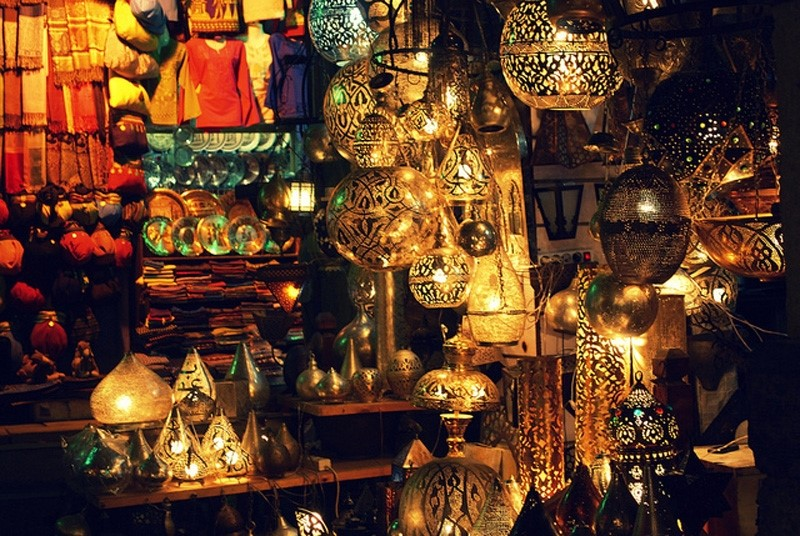
خان الخليلي
أشهر أحياء القاهرة القديمة، وهو في الأصل سوق عريق أنشأه الأمير المملوك جاركس الخليلي عام 1382م، لذلك يزيد عمره على 600 عام، ويعتبر من أكثر أماكن القاهرة جذباً للسياح، ويتميز بالمباني التي بغلب عليها الطابع الإسلامي، فلا تزال المباني كما هى منذ عصر المماليك، ويشتهر خان الخليلي بكثرة المحلات والمطاعم والبازارات، وهو مكان مناسب جدا لإقتناء التذكارات والهدايا، خاصة إذا كنت من محبي الأعمال اليدوية المصنعة من الزجاج والأحجار الكريمة والنحاس وغيرها.
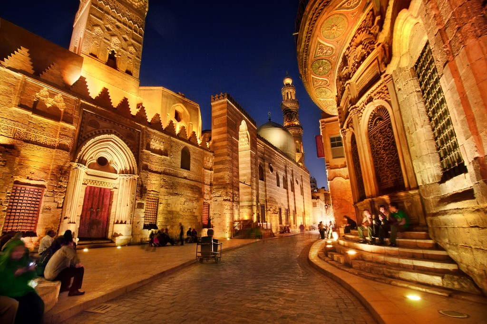
مصر القديمة
أحد أحياء القاهرة العريقة وأهمها على الإطلاق، فهذه المنطقة العتيقة ثرية بالرموز الدينية التي تعود لفترات مختلفة من التاريخ، حيث تضم العديد من المساجد والمباني الأثرية العتيقة، كالجامع الأزهر ومسجد عمرو بن العاص، وغيرها من الأماكن التي بلغت من العمر عتيا، لابد أن تضعها في جدولك السياحي، ستجد الكثير من المتعة ها هنا في هذه المنطقة الشاهدة على تاريخ القاهرة العظيم.
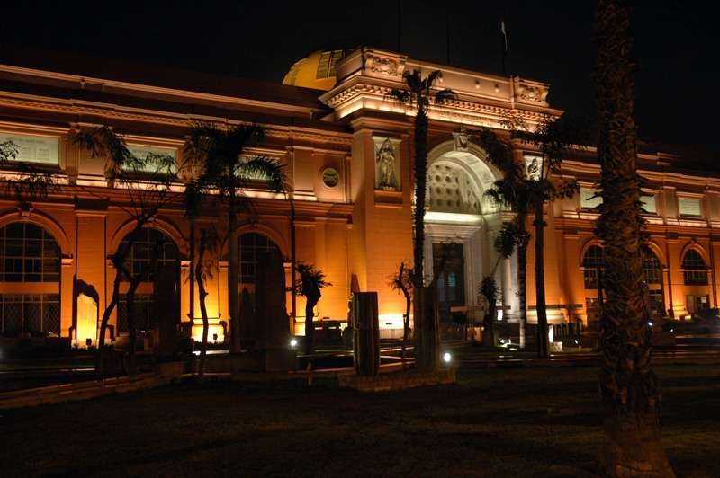
المتحف المصري
المتحف المصري هو بوصلة السياحة في مصر، فهو في حد ذاته كنزاً حقيقياً، حيث يضم عدد هائل من القطع الأثرية منذ فترة ما قبل التاريخ وحتى نهاية العصر الفرعوني، بالإضافة إلى بعض الآثار الرومانية واليونانية.
ويتكون المتحف من طابقين، يحوي الطابق الأول التوابيت والتماثيل الفرعونية الضخمة وغيرها من الآثار الثقيلة، أما الطابق الثاني فيضم المخطوطات واللوحات وآثار الحياة اليومية البسيطة في العصر الفرعوني، وبعض القطع الأثرية الخفيفة أيضاً من العصر الروماني واليوناني.
معبد الكرنك
معبد الكرنك الاقصر Luxor Karnak Temple هو سلسلة من دور العبادة التي يرجع تاريخها إلى العصر الفرعوني، وتمتد على مساحة أكثر من 60 فدان شمال مدينة الاقصر ، ويُعد معبد الكرنك هو الأكبر من نوعه على مستوى مصر والعالم.
يعكس هذا المعبد من خلال مراحل بنائه وتطوره تاريخ وثقافة مصر القديمة، تبدأ من الحقبة الفرعونية الوسطى وتنتهي بعصر البطالمة عبر 8 بوابات كل بوابة منها تقود إلى بناء مُهيب من 10 أبنية عظيمة، تجعل منه واحد من أهم معالم السياحة في مصر .
فإن كنت على استعداد لركوب آلة الزمن والإبحار بين حضارات ما قبل 7 آلاف سنة من الآن، فإبقى معنا خلال هذه الرحلة المُثيرة داخل معبد الكرنك الاقصر الشهير.
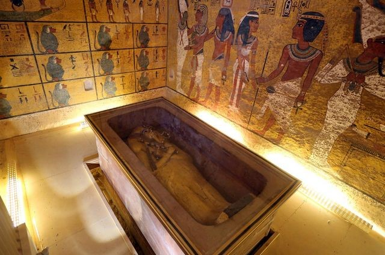
وادى الملوك
وادي الملوك الاقصر أو وادي بيبان الملوك Valley of kings يقع على الضفة الغربية لنهر النيل مقابلًا لمدينة الأقصر، ويضم مقابر لملوك وحاشية الأسر الفرعونية من الأسرة 18 وحتى 20 والتي حكمت مصر على مدار 5 قرون.
وينقسم الوادي إلى جهتين جهة شرقية تضم أغلب المقابر الملكية وجهة غربية، كما تتراوح مقابره ما بين البسيطة والمُعقدة الكبيرة التي تضم نحو 120 مقبرة تقريبًا تم بنائها ما بين القرنين 11 و16 قبل الميلاد، ويعد من أهم معالم السياحة في مصر .
فما رأيك عزيزي القارئ أن نسبح بعقولنا الآن في واحد من أكثر الاماكن السياحية في الاقصر شهرةً لنرى خفايا أجدادنا الفراعنة في إعداد موتاهم للعالم الآخر.
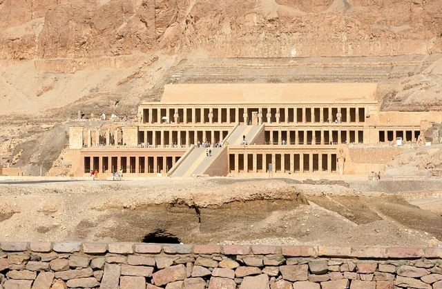
معبد حتشيبسوت
معبد حتشبسوت الاقصر الشهير أو كما يُسمى بمعبد الدير البحري Mortuary Temple of Hatshepsut هو معبد جنائزي شُيّدَ على الضفة الغربية لنهر النيل في مدينة الاقصر على مدار 15 عامًا من حكم الملكة حتشبسوت على طراز يختلف تمامًا عن غيره من المعابد الشرقية.
فالمعبد مُشيّد من الحجر الجيري المُلوّن، وتحول في نهاية الحكم البطلمي ومع بداية انتشار المسيحية في مصر إلى دير قبطي قبل أن يعود لأصله مرة أخرى، ورغم ما مر بمعبد حتشبسوت طيلة هذه القرون لا يزال له جماله وسحره الخاص مما جعله من أهم معالم السياحة في مصر.
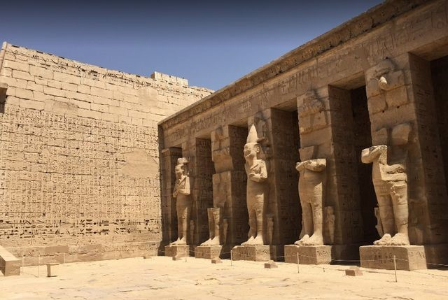
معبد هابو
من أكبر المعابد الجنائزية المصرية التي يرجع عهدها لعصر الدولة الفرعونية الحديثة وبالتحديد الأسرة 20، حيث شيّده الملك رمسيس الثالث لتمجيد الإله آمون.
ويحمل المعبد الذي يقع في مدينة هابو بالأقصر اسم كاهن قبطي عاش في الدير الذي شُيّد بين أسوار المعبد حتى القرن 7الميلادي، ويعتبر من افضل الاماكن السياحية فى الاقصر
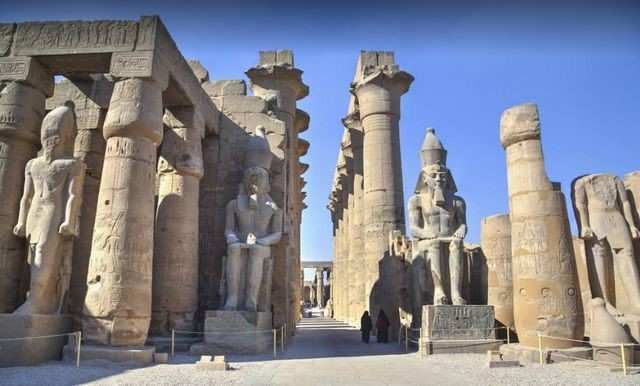
معبد الاقصر
من أروع اماكن سياحية في الاقصر يُمكنك زيارتها للاستمتاع بالتماثيل والمسلات والمقاصير التي تعود لعهد الأسرتين 18 و19 وما يُزينها من نقوش هيروغليفية تُمجّد الإله آمون وأسرته
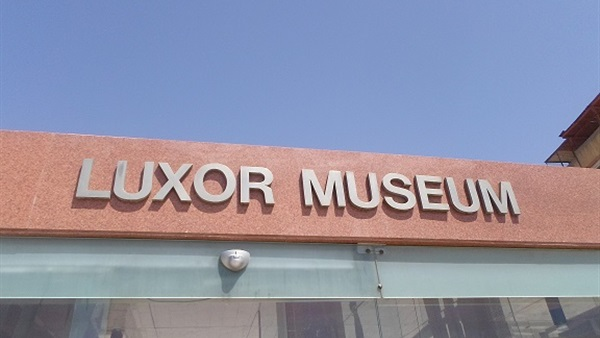
متحف الاقصر
من افضل معالم السياحة في الاقصر عهدًا فتاريخه يرجع إلى منتصف السبعينات، ولكنه كواقع يستعرض بمُقتنياته تاريخ مصر على مدار 4 آلاف عام بدايةً من العصر الفرعوني وحتى العصر الإسلامي.
ويحتل متحف الأقصر مساحة 16 ألف متر مربع من الضفة الشرقية لنهر النيل وتحده أهم معالم الاقصر من كل اتجاه
جزيرة إلفنتين
أحد أجمل الأماكن السياحية في أسوان حيث، تتزين بأشجار النخيل الساحرة، ومنازل القرية ذي الألوان الزاهية المبنية بالطوب اللبن. تعتبر من أكثر معالم أسوان جذبا للسياح.
فيقع في نهايتها متحف أسوان، وأطلال أبو أقدم مستعمرة في أسوان؛ والتي تحوي معبد خنوم، ومعبد ساتيت. يقع شرق السد أسفل مستعمرة الأطلال، مقياس النيل الذي تم تشيده في العصر الفرعوني لمعرفة مستوى نهر النيل وقت الحصاد.
يمكنك بعد ذلك التوجه إلى شمال أسوان؛ للاستمتاع بجمال، وسحر قريتي كوتي، وسيو اللتان تتزينان بالمنازل الملونة التي تبث في النفس البهجة، والراحة. تمتلأ أروقة المدن برعى الأغنام، والدجاج مما يشعرك بالاسترخاء بعيدا عن ضغوط حياة المدينة.
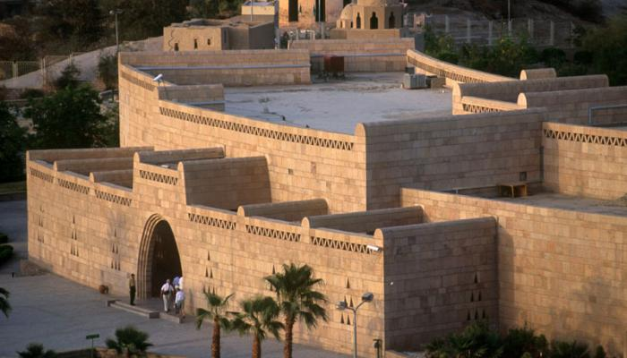
متحف النوبة
أحد أهم الأماكن السياحية في أسوان ومصر، ومكان مميز لمحبي التاريخ حيث؛ بإمكانك التعرف على تاريخ النوبة القديم، والحديث. يروي المتحف قصة تلك الحضارة التي محيت آثرها بعد بناء السد العالي، وبحيرة ناصر.
هذا أيضا بجانب الأعمال اليدوية الخاصة بمملكة كوش، أي النوبة القديمة بالإضافة إلى عدد من الصور باللونين الأبيض، والأسود الخاصة بمشروع منظمة اليونسكو للحفاظ على آثار معبدي أبو سمبل، والفيلة من مياه السد العالي.
تشمل الأعمال اليدوية الخاصة بالمتحف؛ تمثال رمسيس الثاني، وتمثال أميرناس، ورأس شبتكا، ورأس تهركا من الجرانيت الأسود. هناك أيضا القسم الإثنوغرافيكالي الذي؛ يعرض مجموعة من الحرف النوبية اليديوية الرائعة، والفن الشعبي.
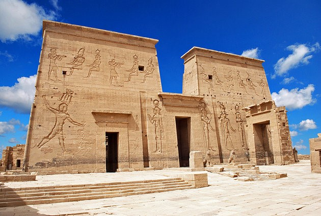
معبد الفيلة
يعتبر معبد الفيلة من أهم آثار مصر العليا، وذلك بسبب عمارته التي لا مثيل لها، والآثار الهامة التي يحويها. تم نقله من مكانه السابق بسبب مياه السد، التي كانت سبب في تدمير جزء منه إلى جزيرة أجيليكا.
تحوي الجزيرة أيضا معبد حتحور، وكشك تراجان بجانب بعض المباني التي تنتمي للحقبتين الرومانية، والبيزنطية. يمكنك بلوغه بواسطة التاكسي.
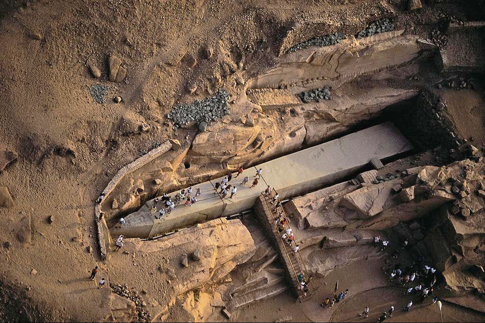
المسلة الغير مكتملة
المحجر الشمالي لأسوان موطن لأحد أهم، وأشهر آثار المنطقة؛ المسلة الغير مكتملة، والتي يمتد طولها إلى واحد وأربعين متر، وعرضها إلى أربعة أمتار. تم فقد جزء كبير من المسلة بسبب حدوث شرخ بها، ويقال أنه إذا اكتملت سيصل وزنها إلى ألف مائة ثمانية وستين طن.
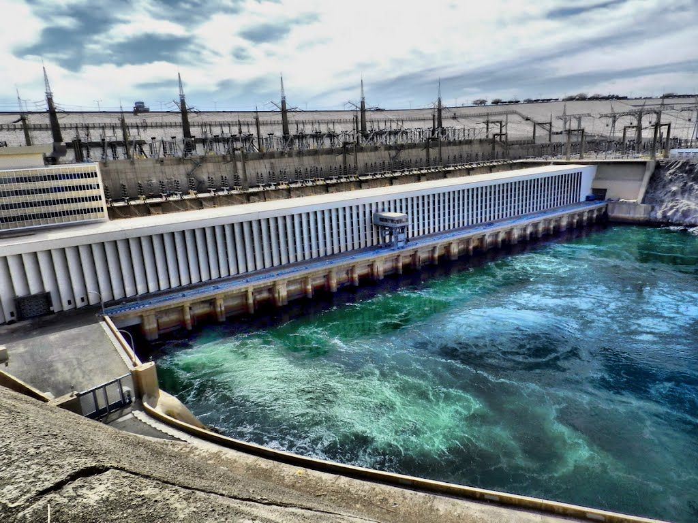
السد العالي
أحد أهم، وأكثر المباني المثيرة للجدل في تاريخ مصر الحديث، تم تأسيسه عام 1960واستغرق إنشائه إحدى عشر عام. واستهلك 42.7 مليون متر مكعب من الحجر أي سبعة عشر ضعف حجم هرم خوفو.
يمتد طوله إلى 3.7 كيلومتر، ويصل سمكه إلى تسعمائة وثمانين متر عند القاعدة، وأربعين متر عند القمه. للسد العالي أهمية عظمى حيث؛ يستخدم في حفظ المياه، وتوليد الكهرباء. لذا لا تفوت زيارته.
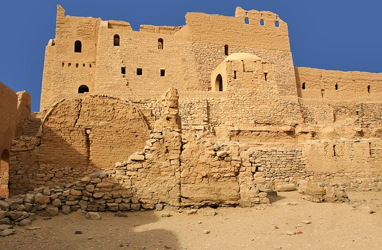
دير القديس سيمون
يقع دير القديس سيمون بين ضفتي نهر النيل، وتم تشيده في القرن السابع، ولكنه ظهر مؤخرا في القرن الثالث عشر بسبب نقص المياه، ويعتبر من أهم الآثار القبطية في مصر.
الجزء الجنوبي للدير مكون من كنيسة، والجزء الشرقي يحوي مقبرتين، والمنتصف يضم تصور للمسيح بين الملائكة. الجزء الشمالي، والجزء الغربي يحوي كلا منهما مباني فرعية، وكهوف صغيرة.
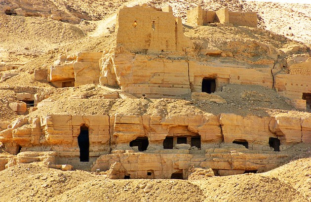
مقابر النبلاء
مجموعة من المقابر الحجرية المنقوشة التي؛ تمتد على الضفة الغربية لنهر النيل حيث تم دفن حاكمي، وكهنة، ونبلاء جزيرة إلفنتين. المقبرتان الخامسة والعشرين، والسادسة والعشرين أولى المقابر التي يمكنك زيارتها.
وتنتمي لسلالة الحكم السادسة حيث؛ تم دفن الحاكمين ميخو، وسابني بها. كلا منهما يتميز بالبساطة، والعملية. أعلى على اليمين تقع المقبرة الواحدة والثلاثين، والتي تنتمي للأمير سارينبوت الثاني، وتعد أكبر، وأفضل المقابر.
تأتي بعد ذلك المقبرة الثالثة والأربعين، والتي تحوي نقوشات تسجل حركة التجارة النوبية في هذا الوقت. وأخيرا مقبرة ستيكا؛ أكثر المقابر تضررا، والتي مازالت تحتفظ ببعض الرسومات الملونة التي؛ تبرز الفن في تلك الفترة.
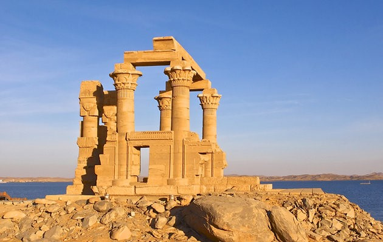
كلابشة
من أهم الأماكن السياحية في أسوان و عبارة عن مجموعة من المعابد التي تم حفظها من مياه بحيرة ناصر، ضمن مشروع الانقاذ الخاص بمنظمة اليونسكو. ويعد معبد كلابشة واحد من ثلاث معابد تم حفظها، كما أنه أفضلها، وأصغرها عمرا؛ فيعود لإمبراطور الرومان أوغسطس.
يقع معبد بيت الوالي في الشمال الغربي، وتم تأسيسه بواسطة رمسيس الثاني، ويضم دهليز، وغرفة للعرض، وملآذ. وأخيرا معبد كيرتاسي الذي يضم عمودي حتحور عند المدخل، وأربع أعمدة ذي قمة زهرية.
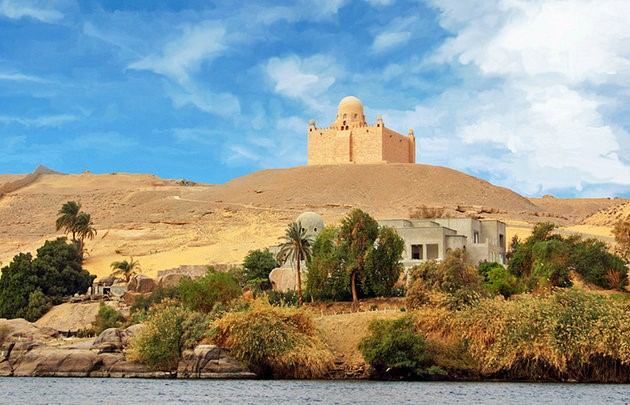
ضريح آغا خان
يقع ضريح آغا خان على الضفة الغربية لنهر النيل، وتم تأسيسه ليحوي مقبرة السلطان محمد شاه، والذي عرف بدوره الهام في تأسيس عدد من المؤسسات التعليمية، والطبية بإفريقيا، وآسيا.
لقب باسم آغا خان، وكان يتردد على أسوان كثيرا، للاستمتاع بجوها الساحر، وطبيعتها المذهلة. لذلك اختيرت أسوان لإقامة هذا الضريح بها.
قلعة قايتباى
أفضل الأماكن السياحية بالإسكندرية وموجودة بوسط البلد تطل على الكورنيش مباشرة، وتذكرة الدخول للقلعة لا تتعدى 5 جنيهات للمصريين، ومواعيد الدخول من 9 صباحًا وحتى 5 المغرب، والمنطقة المحيطة بالقلعة مفتوحة 24 ساعة.
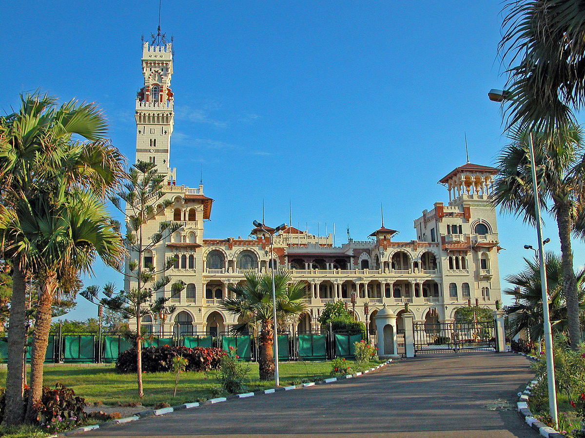
حدائق المنتزه
أما حدائق قصر المنتزه فموقعها نسبة لاسمها بالمنتزه، وهى عبارة عن مجموعة هائلة من الجناين والمطاعم وتذكرة الدخول 10 جنيهات.
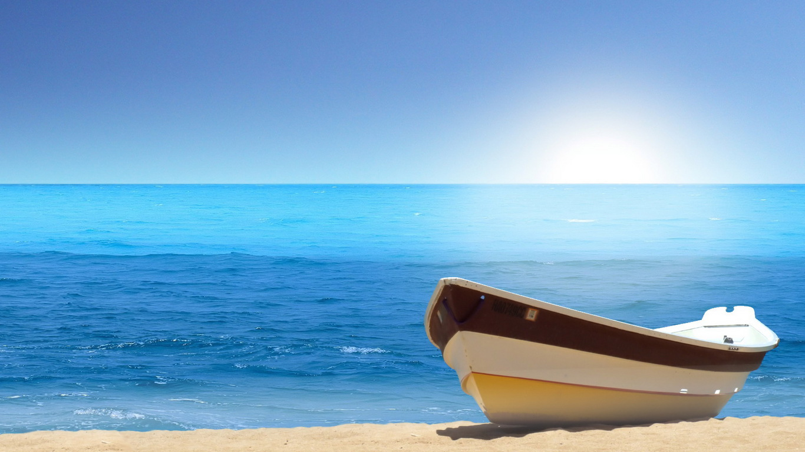
المعمورة
جناين المعمورة هى أيضًا بالقرب من المنتزه وتذكرة الدخول لا تتعدى 5 جنيهات، لكن الجديد بها أنها تطل على البحر لذلك تتوافر بها أنشطة مثل ركوب "البيتش باجى".
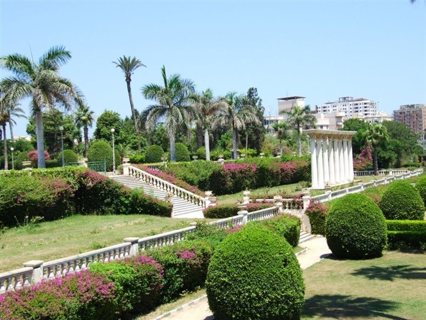
حدائق أنطونيادس
هى حدائق سياحية لها تاريخ، فيعود بنائها إلى عصر البطالمة، ثم شهدت تطويرًا كبيرًا فى عهد محمد على، وبها قصر عملاق له كان يستقبل به كبار الزوار من ملوك وزعماء العالم وقتها، وتقع الحدائق بمنطقة سموحة، كما أن بها زهور نادرة ونافورة عملاقة.
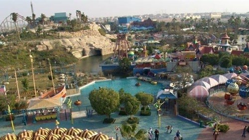
قرية الأسد
توجد على طريق مصر إسكندرية، وتحتوى على العديد من الحيوانات المستأنسة والمفترسة، وتحتوى على العديد من المطاعم التى تقدم الطعام الشرقى والشعبى مثل الفطير المشلتت، كما أنها تقدم أطباقا وأصنافا متعددة من المشويات مثل لحوم النعام.
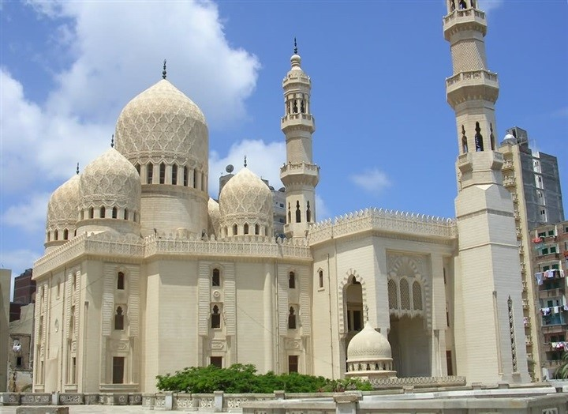
أبو العباس المرسي
يعد المسجد الأكثر شهرة في الإسكندرية رغم وجوده بين العديد من المساجد العتيقة داخل مجمع المساجد بمنطقة بحري، ويتميز أيضًا بطابعه الصوفي ممثلًا في زائريه الذين يأتون من عدة محافظات ريفية للاحتفال بمولد صاحب الضريح الشيخ "شهاب الدين أبو العباس".
ويرجع تاريخ المسجد إلى عام 1300 ميلادية حيث كان بناءً صغيرًا وأعيد بنائه مرة أخرى عام 1477 ميلادية، وتم تجديده وتوسعته على مدار أربعة قرون حتى عام 1863، وظل المسجد كذلك حتى أمر الملك فؤاد الأول بإنشاء ميدان فسيح يطلق عليه ميدان المساجد على أن يضم مسجدًا كبيرًا لأبي العباس المرسي ومسجدًا للإمام البوصيري والشيخ ياقوت العرش، وقام بوضع التصميم الحالي له المهندس المعماري الإيطالي ماريو روسي وتم الانتهاء من بنائه عام 1943.
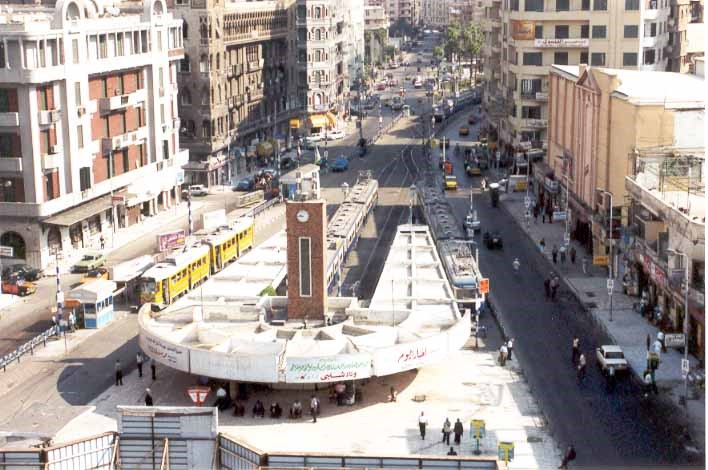
محطة الرمل
يعتبر ميدان محطة الرمل من الأماكن الأقدم في الإسكندرية التي تحظى بشهرة واسعة داخل وخارج المحافظة، إذ لا يزال الميدان يحتفظ بطابعه التراثي منذ عهد الجاليات الأجنبية والذي انعكس على الطراز المعماري للمباني المحيطة به، والذي يعتبر مقصدًا لمختلف الأشخاص من محبين لهذا الطراز إلى مثقفين ومبدعين وكذا صانعي السينما الذي يلجأؤون إليه لتصوير الأعمال السينمائية.
بيد أن بعض التغييرات الطفيفة ظهرت في الميدان الشهير بظهور بعض المتاجر والمقاهي السياحية ذات الطراز الحديث، بينما يبقى عددًا من المقاهي الشهيرة التي أسسها أبناء جاليات أجنبية قبل عقود محتفظًا بطابعه الكلاسيكي الذي يعد مقصدًا للعشرات، علاوة على دور العرض السينمائية العتيقة التي لا تزال في الخدمة.
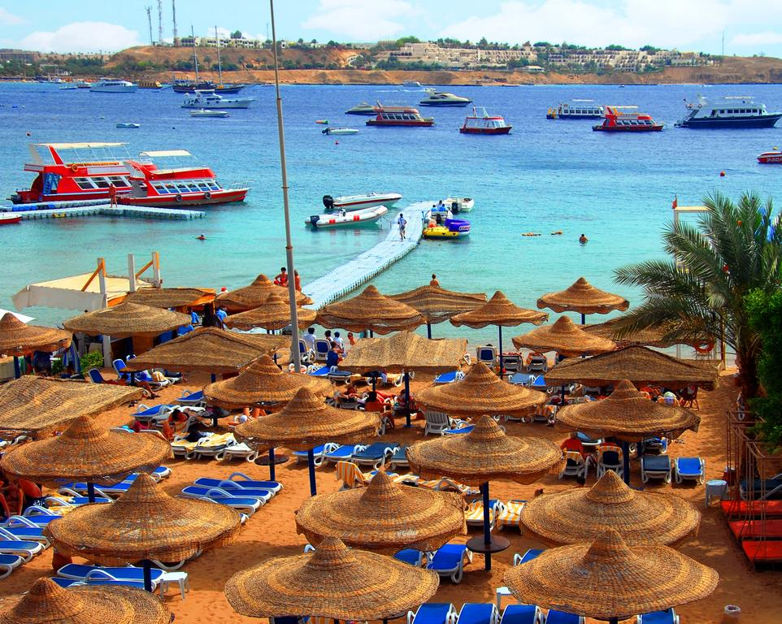
خليج نعمة
هى تلك المنطقة الأكثر شهرة وجذبا للسياحة في شرم الشيخ وتقع هذه المنطقة في قلب مدينة شرم الشيخ يمكنك مشاهدة الشعاب المرجانية من خلال رحلة الجلاس بوت” Glass boat ” وكذلك السباحة مع الأسماك الملونة في مياه البحر الأحمر الساحرة في تلك المنطقة. هذه المنطقة تحديدا هي ملتقى الخليجين (خليج العقبة وخليج السويس ) فيتميز بالمياه الرائعة وشواطئها الرملية الناعمة ولمحبى الغوص يمكنكم الغوص او التزلج على المياه كذلك يمكنك الإبحار بالقوارب الشراعية.
شوارع خليج نعمة واسعة مسماه بأسماء الزعماء العرب والمصريين المشهورين الشوارع مليئة بالكافيهات والمقاهي والمطاعم واشهر محلات الماركات العالمية وأرقى المولات التي تبيع أدوات السباحة والغوص والتحف الاثرية والهدايا التذكارية والملابس المتنوعة والاكسسوارات الراقية. فهو مكان رائع متنوع ويوجد به فنادق كثيرة على مستويات متنوعة تناسب جميع الميزانيات والمستويات.
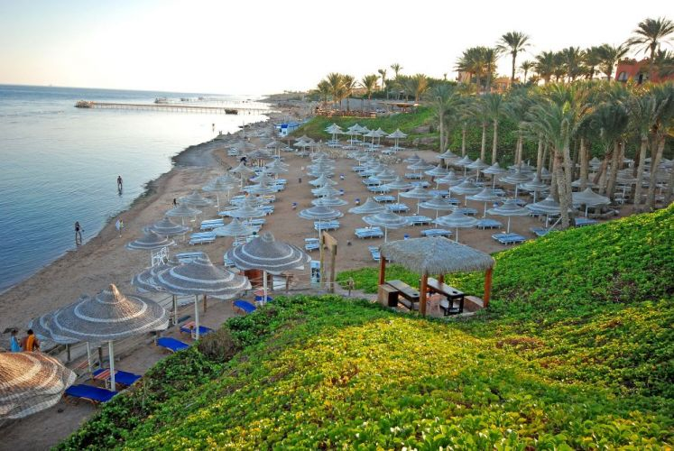
محمية نبق
هي محمية رائعة تبعد عن مدينة شرم الشيخ حوالى 35 كيلو متر في المنطقة بين دهب وشرم الشيخ وتقع بالقرب من دير وجبل سانت كاترين على مسافة قريبة من مدينة طابا السياحية. وتحتوى على أنواع نادرة وعدد كبير من الطيور والحيوانات والزواحف واللافقاريات والقوارض والاسماك النادرة. أيضا المحمية بها نظام نباتي متفرد حيث يبلغ عدد النباتات التي تعتبر قد اندثرت حوالى 86 نباتا على الأقل من مجموع حوالى 134 نبات موجود بالمحمية. ومما هو جدير بالذكر ان تلك المحمية تم إعلانها رسميا كمحمية عام 1992 ميلادية. اذا كنت من هواة التخيم في الصحراء أو الغوص او مراقبة الطيور ورؤية الحيوانات النادرة فعليك ألا تفوت زيارة تلك المحمية الرائعة والنادرة محمية نبق اثناء السياحة في شرم الشيخ.
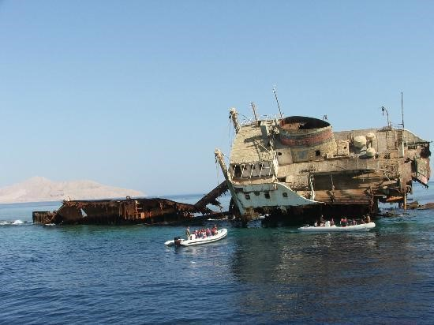
الغرقانة
هي منطقة سياحية رائعة يأتى اليها ملايين السياح سنويا بقصد الغوص ومشاهدة السفينة الغرقانة وهى سفينة ألمانية غرقت في تلك المنطقة منها جزء علوى وجزء اسفل البحر على عمق حوالى 24 متر ولا زالت السفينة محتفظة باغلب محتوياتها من أدوات البحارة وما الى ذلك. اذا كنت من هواة الغوص ومشاهدة الشعاب المرجانية الساحرة والاستمتاع برحلة بحرية أو رحلة غوص ترى فيها السفينة الغرقانة لا تفوق زياره هذا المكان اثناء السياحة في شرم الشيخ.
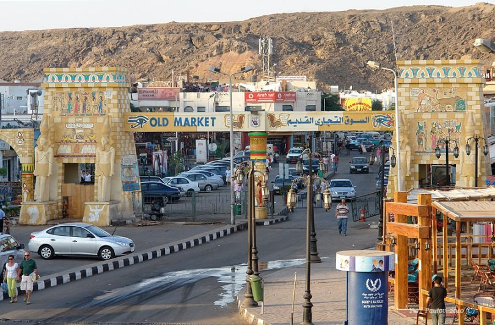
السوق التجارى القديم
وهى من المناطق القديمة بمدينة شرم الشيخ والتي لها طابع تراثى رائع وبها منطقة الجبل والكثير من المحلات التجارية التي تبيع البضائع باسعارها العادية غير الأسعار السياحية. وبها البزارات السياحية و قرية التراث البدوى التي يقصدها اغلب السائحين. كما يوجد بها حدائق عامة وبرجولات وجلسات عائلية كما يوجد بالقرب منها نادى شرم الشيخ الرياضى الذى يحتوى على رياضات متنوعة وحمام سباحة وملاعب تنس وكرة قدم وسلة ….. الخ. فيعد هذا السوق من اهم معالم السياحة في شرم الشيخ.
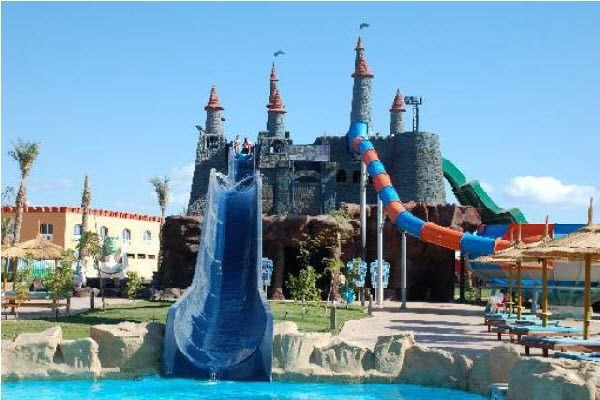
اكوا بارك
توجد في هضبة ام السيد بشرم الشيخ. يمكنك التمتع بالكثير من الألعاب المائية الرائعة والمثيرةهناك خاصة اذا كانت رحلتك مع اطفالك فهى مكان مثالى للترفيه للاطفال.
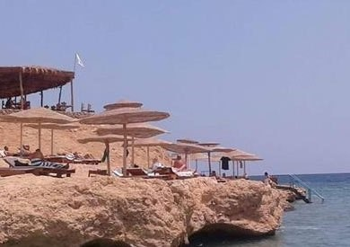
هضبة ام السيد
تلك المنطقة من اقدم مناطق شرم الشيخ وتعتبر الجزء الرئيسي بها حيث بها أغلب المصالح الحكومية والفروع الرئيسية للبنوك في شرم الشيخ ومكتب البريد والمدارس الحكومية واللغات ومجلس المدينة والى غيره من المصالح الهامة بجانب وجود مول ميركاتو الشهير والمتنوع والكثير من الفنادق والشواطئ التي تتمتع بشاطئ فيروزي رائع.
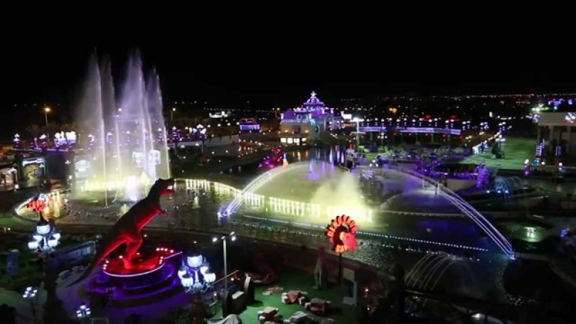
هوليود
مكان رائع يبعد عن خليج نعمة 10 دقائق تقريبا. وهى منطقة رائعة فيها نافورة راقصة رائعة والعديد من الألعاب للصغار والمحلات والبازارات السياحية.
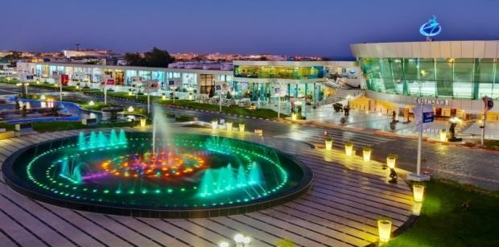
سوهو سكوير
توجد في منطقة الغرقانه وهى منطقة متميزة جدا جاذبة للسياحة في شرم الشيخ, فيها نافورة راقصة والعديد من التحف الرائعة ويوجد مشى طويل ملئ بالمحلات والبازارات على مختلف الاشكال والألوان بجانبها عدة فنا\دق متميزة للإقامة.
محمية رأس محمد
تلك المنطقة الرائعة والتي تعد من اشهر الأماكن جذب السياحة في شرم الشيخ بل وفى العالم باكمله. تبعد عن مدينة شرم الشيخ حوالى 12 كيلو متر فقط وتبلغ مساحتها 850 كيلو متر تضم فيما بينها جزيرتي تيران وصنافير فيها الكثير من الحفريات النادرة وبها 150 نوع من الشعاب المرجانية المحمية وكذلك أنواع كثيرة من الطيور والحيوانات البحرية والحشرات النادرة واهم منطقة بها تقريبا هي البركة المسحورة والتي تعتمد على حركة المد والجزر. وتتميز منطقة راس محمد بالشعاب المرجانية في أعماق المحيط المائي والاسماك الملونة والكهوف في الأعماق. وهى منطقة مميزة للغطس ومقصد من الغواصين على مستوى العالم ومما هو جدير بالذكر انها أعلنت كمحمية طبيعية عام 1983 ميلادية.
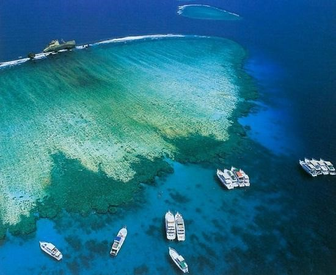
جزيرة تيران
تلك الجزيرة الرائعة وتبعد حوالى 6 كيلومتر عن ساحل سيناء الشرقى وهى من الجزر والشعاب المرجانية العائمة ولها أهمية تاريخية منذ العهد البيزنطي حيث كان يوزع منها بضائع على الشرق الى الإسكندرية ومن ثم الى دول حوض البحر المتوسط
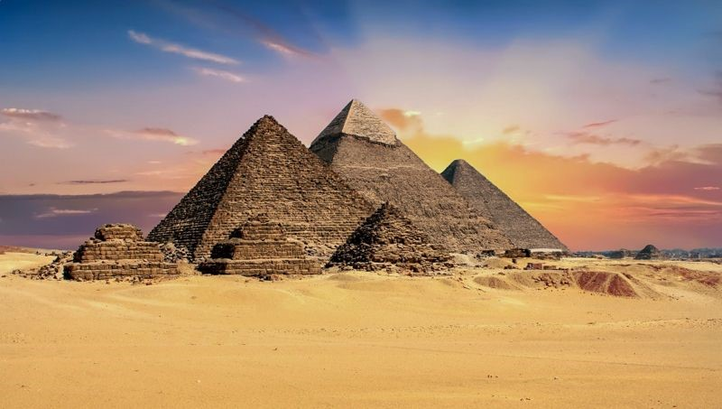
الأهرامات
من عجائب الدنيا السبع التي تضع السياحة في مصر بوجه عام أو السياحة في الجيزة بالتحديد على رأس أولويات أي سائح وافد إلى مصر خاصةً إن كانت تلك هي زيارته الأولى. وتنقسم اهرامات الجيزة التي يعود تاريخها إلى نحو 25 قرن قبل الميلاد إلى 3 أهرامات رئيسية لثلاث ملوك من ملوك الدولة الفرعونية القديمة وهم: هرم خوفو يقع على مسافة 13 فدان من جنوبه الغربي هرم خفرع، وفي نفس الاتجاه يقع أصغرهم وهو هرم الملك منقرع، ويحيط بهم ثلاث أهرامات أخرى صغيرة.
وتعتمد اهرامات الجيزة في بنائها على الحجر الجيري، الجرانيت الأسواني، حجر جيري أبيض مصقول وعاكس لأشعة الشمس كالمرآة ولكنه لم يعد موجودًا الآن. أما تصميم الاهرامات من الداخل فينقسم إلى مدخل مائل يُعرف باسم المعرض الكبير، 3 غرف دفن منهم غرفة تُمثل قاعدة صخرية تقود إلى غرفة تُدعى غرفة الملك أي مدفنه، وأخرى تُدعى غرفة الملكة رغم أنها ليست مدفنًا لها.
وتُعد الحسابات الرياضية والجغرافية المُعقّدة التي اعتمد عليها مُهندسو وبُناة الفراعنة عند بناء الاهرامات المصرية والمعلومات عن الاهرامات بشكل عام أعجوبة ولُغزًا مُحيرًا للعلماء حتى وقتنا هذا.
ابو الهول
ا يُمكن أن تزور الاهرامات المصرية العريقة وتنسى أضخم أقدم المنحوتات الفرعونية من زيارتك مع التقاط بعض الصور التذكارية وانت جانبها.
إنه تمثال أبو الهول رمز الملك خوفو الذي يجمع بين قوة الأسد وحكمة الإنسان في أساطير، وفي أساطير أخرى فهو إله شمس الغروب حارس المقابر الملكية التي تُضمها اهرامات الجيزة من عبث اللصوص. ويظهر أبو الهول في شكل تمثال بجسم أسد ورأس إنسان في طلّة من الحجر الكلسي المُلوّن والجبس.
وتُقدّم في ساحة أبو الهول عروض ليلية مُذهلة تُعرف بعروض الصوت والضوء تستعرض معلومات عن الاهرامات وبنائها وعن تاريخ مصر القديم، تُضفي على السياحة في الجيزة وبمنطقة الأهرامات طابع خاص.
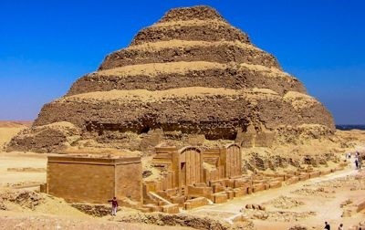
هرم سقارة المدرج
هرم سقارة المشهور بهرم زوسر أو الهرم المدرج في منطقة سقارة على بعد 30 كم جنوب القاهرة، إذ يظهر هرم زوسر من الخارج في صورة طبقات مُتدرجة كبيرة عند القاعدة تقل كلما ارتفعت لأعلى، أما من الداخل فتصميمه مثل تصميم الاهرامات من الداخل يضم مجموعة من المقابر الملكية التي يعود تاريخها إلى عهد الدولة الفرعونية القديمة. كما تضم المنطقة أيضًا مجموعة من المعابد والآثار بالإضافة إلى 16 هرم آخر لم يتبقى منهم صامدًا حتى الآن سوى القليل.
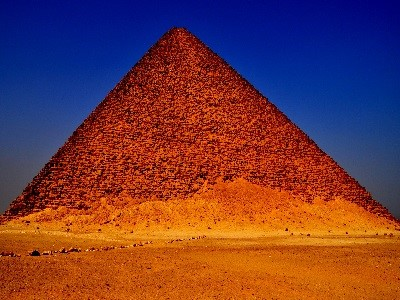
أهرامات دهشور
الهرم المائل:
هو أول محاولة للملك سنفرو لبناء هرم كامل، ولكنه بعد ان وصل عند منتصف الهرم اكتشف انه لابد من تغيير زاوية البناء لاكتمال الهرم لذلك سمى بـ “الهرم المائل”، استغرق بنائه حوالي 14 سنة تعلم فيها مهندسوا سنفرو كيفية بناء الهرم، ثم بعد ذلك قام ببناء هرم “الهرم الأحمر”.
• الهرم الأحمر:
والمُصنّف كأول محاولة ناجحة لبناء الاهرامات المصرية على يد الملك سنفرو وثالث أكبر اهرامات الجيزة بعد خوفو وخفرع. ويظهر الهرم الأحمر الذي يقع بمنطقة دهشور على بعد 40 كم جنوب القاهرة في صورة بناء مُفلطح غير مستوي الهيئة من الحجر الجيري أحمر اللون والذي كان السبب في مُسماه الشهير، ويُحيط بهرم دهشور مجموعة من المقابر الملكية الفرعونية التي تنتمي لعهد الدولتين القديمة والوسطي.
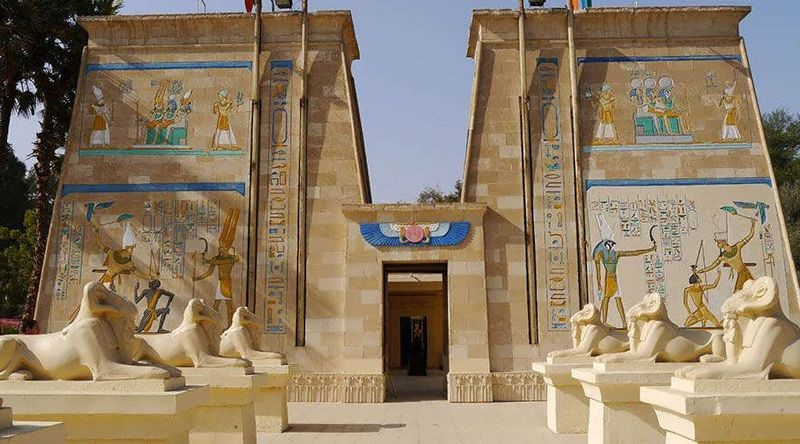
القرية الفرعونية
تُعد القرية الفرعونية في شارع البحر الأعظم من أعظم معالم السياحة في الجيزة، حيث تُقدّم صورة مُتكاملة عن تاريخ مصر على مر العصور وتحديدًا العصر الفرعوني، من خلال أُناس حقيقيون يرتدون الزي الفرعوني ويمثلون على خلفية صوتية واقع حياة المصري القديم خلال رحلة نيلية يقوم بها السائح بمجرد دخوله إلى القرية.
كما تضم القرية مجموعة من المتاحف مثل نُسخة مُقلّدة من المقبرة الأصلية للملك توت عنخ آمون بكل ما تحتويه من كنوز، متحف التحنيط الذي يستعرض مهارات القدماء المصريين في تحنيط جثثهم وعلاج مرضاهم، متحف بناة الأهرامات الذي يستعرض رحلة بناء أهرامات الجيزة، متحف كليوباترا الذي يستعرض تاريخ البطالمة في الإسكندرية عاصمة مصر آنذاك. المتحف الإسلامي والقبطي اللذين يستعرضان تاريخ مصر قبل وبعد الفتح الإسلامي لها، متحف نابليون لاستعراض تاريخ الحملة الفرنسية على مصر من خلال بعض المخطوطات والمنحوتات والصور، متحف حرب أكتوبر ومتحفي جمال عبد الناصر والسادات، وغيرها.
بالإضافة إلى ذلك تضم القرية أماكن لشراء الهدايا التذكارية ذات الطابع الفرعوني ومنطقة ترفيهية للأطفال.
متحف مركب الشمس
وهو متحف مُكوّن من 3 أدوار رئيسية تكشف عن تكوين المركب الفرعوني بالكامل، وقد أُقيم المتحف في نفس المكان الذي تم اكتشاف المركب فيه لأول مرة عام 1954 فوق واحدة من الحفرات الخمس المحفورة في الصخر والمُحيطة بهرم خوفو من جهة الجنوب.
لا تفوت زيارة متحف مركب الشمس أثناء جولة السياحة في الجيزة بشكل عام وأثناء زيارتك إلى الاهرامات المصرية بالتحديد حيث ستشاهد جزء من التاريخ جُمِّعَ ورُمِّمَ ليظهر لك وكأنه صنع بالأمس
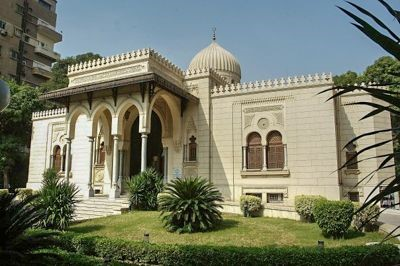
متحف الخزف الإسلامي
ويقع المتحف بداخل مركز الجزيرة للفنون في الزمالك مُحتلًا طابقين من قصر أحد أمراء مصر في عشرينات القرن الماضي يكس توليفة رائعة من الطرز المعمارية الإسلامية والغربية المُتميّزة.
ويتكون طابقي متحف الخزف الإسلامي من قاعة رئيسية تلتف حول نافورة رخامية ملونة ذي قبة ونوافذ زجاجية ملونة بطراز يُحاكي طراز البناء الإسلامي، إلى جانب 5 قاعات أخرى تستعرض نماذج لأروع المصنوعات الفنية والخزفية خلال عهد الدولة الإسلامية في مصر بدايةً من العصر الفاطمي وصولًا للعصر العثماني. بالإضافة لمشغولات سورية وإيرانية، مما يجعله وجهة مثالية للسائح المُهتم بالسياحة التاريخية الدينية
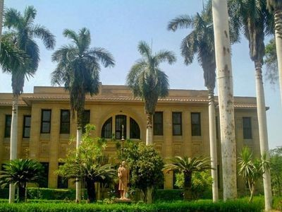
المتحف الزراعي
وهو مجموعة من المتاحف في متحف واحد أُنشئ للمرة الأولى عام 1938 على مساحة 30 فدان ليشهد مجموعة من التوسعات كان أهمها 1996 ثم 2002 تم خلالها إضافة متاحف وقاعات فرعية للمتحف الرئيسي.
ويستهدف المتحف الزراعي استعراض كل ما يتعلق بالزراعة في مصر منذ أقدم العصور وحتى العصر الإسلامي من خلال 6 قاعات رئيسية مُقسّمة على 3 مباني، بالإضافة إلى حديقتين مُصممتين على الطراز الفرعوني، ومجموعة أخرى من المساحات الخضراء تحتوي على عدد من النباتات النادرة والصوبات الزراعية، ومكتبة وقاعة لعرض الأفلام الوثائقية وإلقاء المُحاضرات.
دير سانت كاترين
دير طور سيناء والمعروف باسم دير سانت كاترين يقع الدير أسفل جبل سيناء فى منطقة جبلية تتميز بحلاوة المناخ وعذوبة المياه وللدير سور عظيم يحيط بعدة أبنية داخلية بعضها فوق بعض تصل أحياناً إلى أربعة طوابق تخترقها ممرات ودهاليز ويعود بناء الدير إلى القرن الرابع الميلادى ويعد الدير هو اعلى قمة فى سيناء كلها.
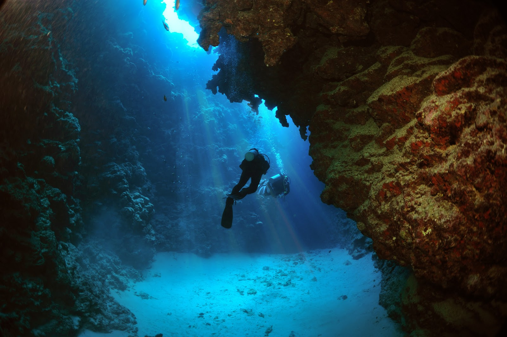
دهب
سميت بهذا الاسم نظرا لتشبية البدو لرمالها المتلألئة تحت ضوء الشمس بالذهب وهى تقع على بعد نحو 100 كيلو متر شمال غرب شرم الشيخ وهى واحدة من اجمل بقع سيناء التى تصلح لممارسة رياضة الغوص , ودهب مشهورة بشواطئها الذهبية والمواقع المدهشة التى تصلح والمنطقة تنقسم الى قسمين الاول هو مركز السائحين حيث توجد الفنادق الرئيسية والثانية هي قرية أصالة البدوية التي تجذب السائحين بسبب رخص المساكن فيها وكثرة اماكنها الترفيهية.
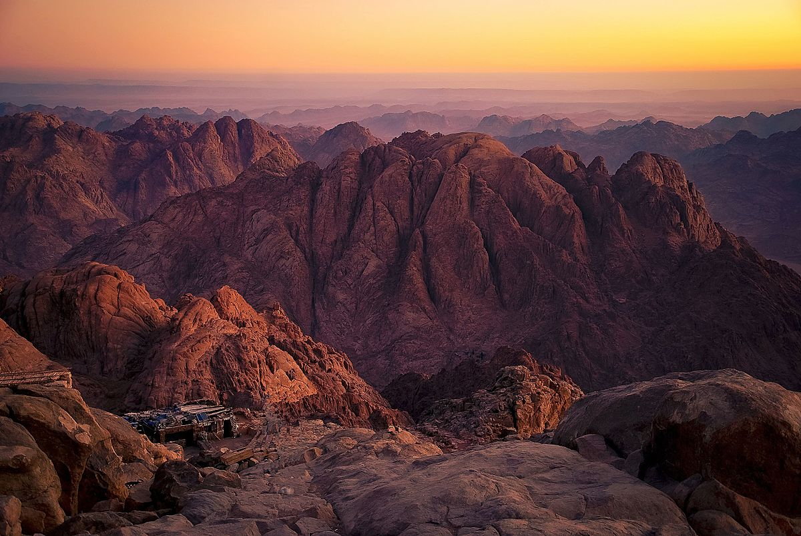
جبل موسى
توجد فى أعلى قمته كنيسة صغيرة وجامع ويحرص السائحون على تسلق الجبل عقب منتصف الليل , لمشاهدة منظر الشروق من اعلى قمته حيث يؤكد كل من زاروا المكان ان منظر شروق الشمس منظر الشروق فى تلك البقعة متعة تستحق كل مشقة حيث تبدو قمم الجبال المحيطة وكأنها قد اكتست بلون أحمر مع بزوغ الشمس ، ويرتفع هذا الجبل 2.285 مترا, ويعتقد ان هذا الجبل هو الذى كلم الله سبحانة وتعالى منه النبى موسى.
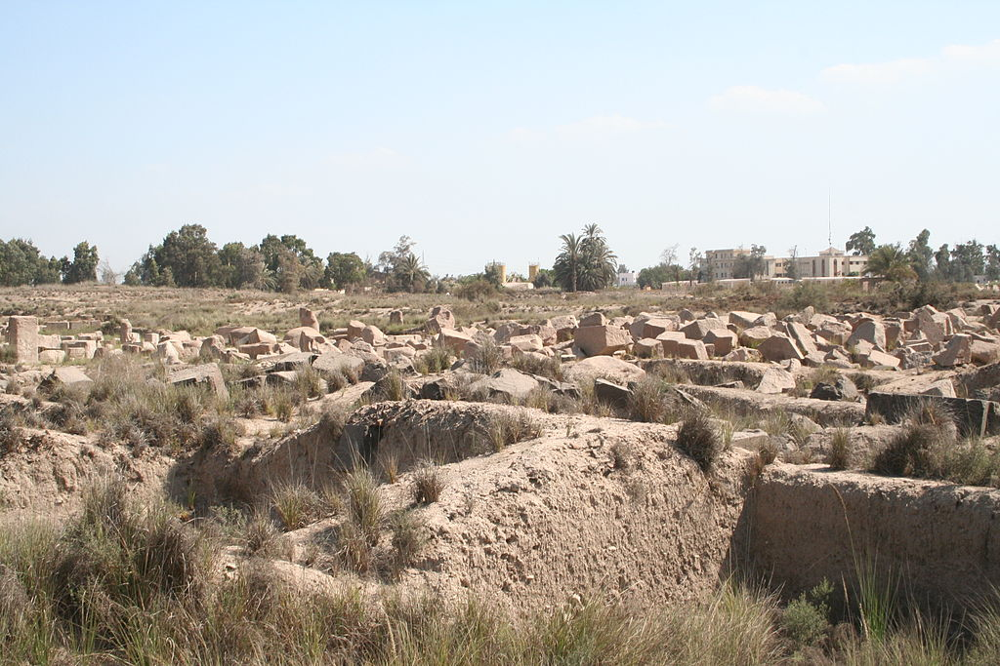
تل بسطة
كانـت تل بسطه "بوبسطه" (بالمصرية القديمة "باستيت") مركزاً دينياً هاماً وإحدى عواصم مصر القديمة. ونظراً لموقعها على مدخل مصر الشرقي فقد واجهت أفواج القادمين من الشرق عبر سيناء، وعاصرت العديد من الفاتحين والغزاة. وقد تشرّفت بأنهــا كانت معبراً ومقراً مؤقتاً للسيدة مريم العذراء ووليدها المسيح " عليهما السلام " عند قدومهما إلى مصر.
صان الحجر
صان الحجر إحدى مدن محافظة الشرقية في جمهورية مصر العربية، قديمًا كانت تسمى تانيس ويعتقد أن اسمها في التوراة "صوعن"، كما ذكرت في الكتابات المصرية القديمة باسم "جعنت".
هناك عدد من أنقاض المعابد، بما في ذلك معبد كان مكرسًا لآمون، وبعض المقابر الملكية من الفترة الانتقالية الثالثة ومنها مقابر الفراعنة بسوسنس الأول وأمينيموبي وشوشنق الثاني، والتي نجت من النهب من لصوص المقابر طوال العصور القديمة، والتي اكتشفها عالم المصريات الفرنسي بيير مونيه عامي 1939 و 1940، وكانت تحتوي على كمية كبيرة من الذهب والمجوهرات واللازورد والأحجار الكريمة الأخرى بما في ذلك الأقنعة الجنائزية لهؤلاء الملوك.